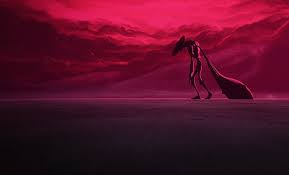
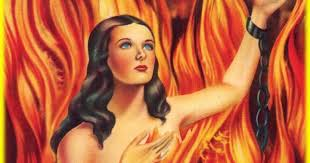

Mitos y Leyendas
A continuacion te presentaremos los mitos y leyendas mas importantes de Venezuela, estas historias provienen de diferentes partes del pais y suelen relacionarse con algun alma en pena que atormenta a alguien que cometio un acto determinado que casi siempre esta relacionado a la maldicion que se les fue impuesta
Anima Sola
Anima Sola
Celestina Abdégano, está condenada a sufrir la pena de una inmensa soledad hasta el fin de los siglos, porque perteneciendo a las mujeres piadosas de Jerusalén que tenían por oficio asistir a los condenados, sucedió que en la tarde del Viernes Santo, día en que murió Jesucristo, le tocó a Celestina subir al Calvario con un cántaro de agua refrescante para darles de beber a los mártires del patíbulo y de esta bebida les dio a Dimas y Gestas, pero...
Los Momoyes
Los momoy son duendes del folclore venezolano que se asemejan a los pobladores de este pais. Habitan en la zona andina desde mucho antes que la llegada de los españoles a nuestras tierrasEllos son descritos como...
El Dueño de la Luz
Al principio de los tiempos no habia luz, la gente vivia en la oscuridad y solo se alumbraba con la candela de la leña. No existia el dia ni la noche. En el pueblo de los warao habia un hombre, padre de dos hijas, que se entero de la existencia de un joven que era el dueño de la luz...El Silbon
El Silbón se presenta a los borrachos en forma sombrío. Otros llaneros le dan forma de hombre alto y flaco. usa sombrero y ataca a los hombres parranderos y borrachos, a los cuales chupa el ombligo para tomarles el aguardiente.La tradición explica que un día le dijo a su padre que quería comer vísceras de venado...